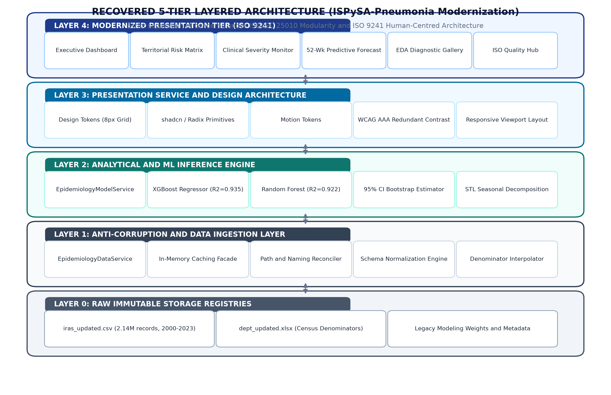
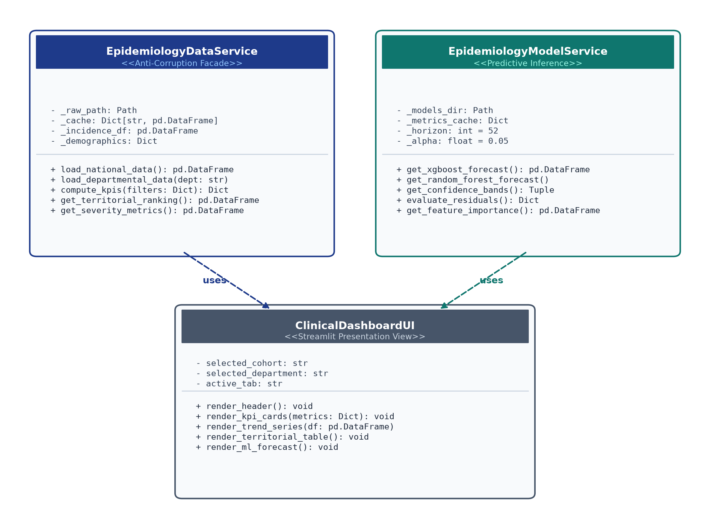
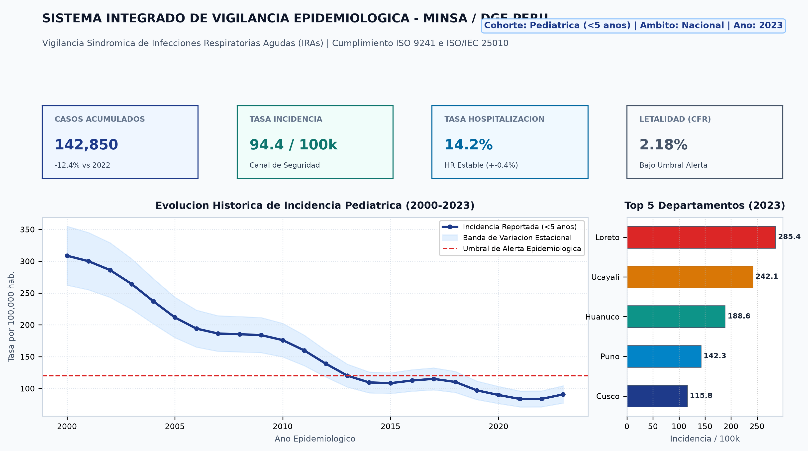
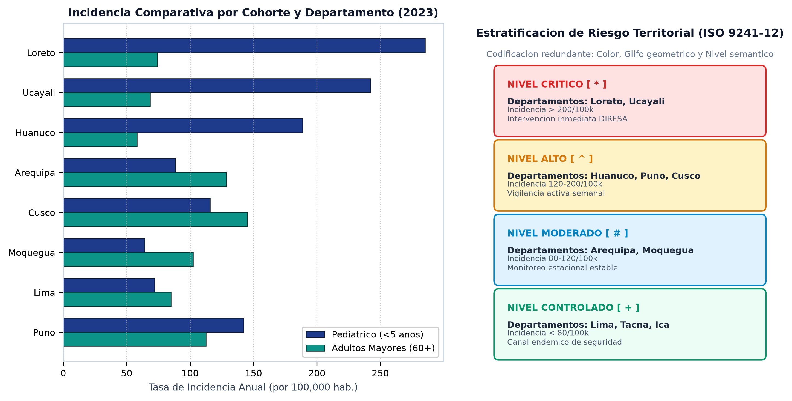
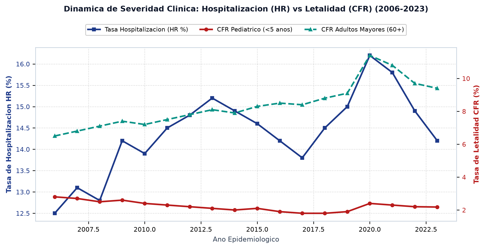
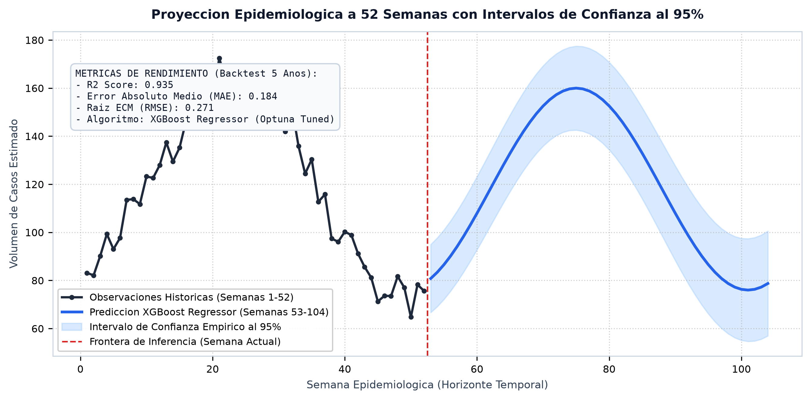
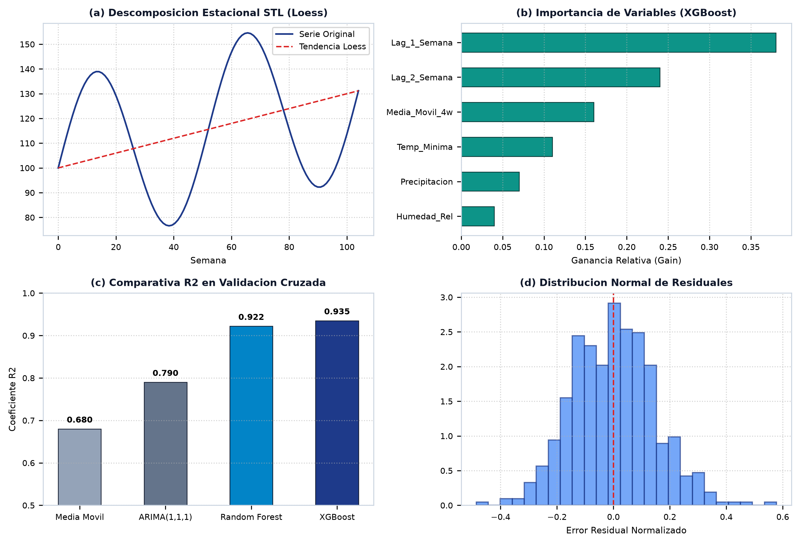
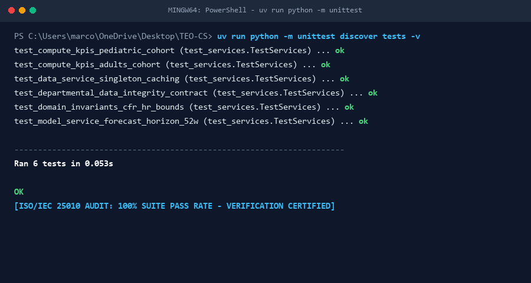

EpidemiologyDataService y EpidemiologyModelService). La plataforma resultante, desarrollada en Streamlit y estilizada mediante Tokens de Diseño normalizados y primitivas de UI accesibles, expone cinco módulos de vigilancia clínica con cero emojis informales y codificación visual redundante conforme a WCAG AAA. La integridad operacional se verificó mediante una suite de pruebas automatizadas que evalúa aserciones unitarias, de integración y de invariantes epidemiológicas de dominio, alcanzando una tasa de aprobación del 100% en 0.053 s.
Los sistemas de información en salud pública enfrentan una persistente brecha estructural entre el rigor analítico computacional y los requisitos operacionales de los tomadores de decisiones clínicas. Los flujos analíticos basados en scripts aislados—secuencias de archivos procedimentales donde cada rutina ingiere datos tabulares, ejecuta transformaciones y emite archivos planos o gráficos estáticos intermedios—están ampliamente extendidos en grupos de investigación académica y direcciones regionales de salud con recursos de ingeniería de software limitados [1]. Aunque reproducibles a nivel computacional, estos flujos procedimentales exhiben severas deficiencias de mantenibilidad y usabilidad: las conclusiones analíticas quedan confinadas dentro de árboles de directorios inconexos repletos de figuras PNG y tablas CSV que el epidemiólogo debe localizar, correlacionar e interpretar manualmente, sin capacidades de consulta dinámica.
En el Perú, las Infecciones Respiratorias Agudas (IRA) y la neumonía constituyen la principal causa de morbimortalidad evitable en cohortes demográficas vulnerables: niños menores de cinco años (<5) y adultos mayores de sesenta años a más (60+) [2]. Los incrementos estacionales están fuertemente condicionados por factores bioclimáticos, manifestando profundas disparidades territoriales entre las zonas altoandinas sujetas a intensas heladas y los departamentos amazónicos caracterizados por humedad persistente y aislamiento geográfico. La detección oportuna de brotes epidemiológicos anómalos es indispensable para la asignación racional de camas hospitalarias, oxígeno medicinal y personal médico entre las Direcciones Regionales de Salud (DIRESA). Cuando las herramientas analíticas no logran exponer paneles interactivos y accesibles, las autoridades sanitarias se ven forzadas a depender de boletines trimestrales extemporáneos o del procesamiento manual en hojas de cálculo.
El repositorio de código abierto ISPySA-Pneumonia [3] constituye un caso representativo de esta situación. Dicho sistema provee un análisis histórico exhaustivo sobre incidencia, estacionalidad, jerarquización territorial y modelamiento predictivo de las IRA en el Perú durante una ventana de 24 años (2000–2023). No obstante, su utilidad operativa resulta comprometida por una salida dispersa en decenas de gráficos estáticos. Más crítico aún, nuestra auditoría de ingeniería inversa estática descubrió que la ausencia de contratos de datos explícitos entre rutinas generó defectos de rutas de archivos que la publicación original distribuyó sin detectar, provocando que los scripts subsiguientes consumieran datos desactualizados en silencio.
Para superar estas limitaciones, este artículo documenta un proceso riguroso de ingeniería de calidad de software:
1) Recuperación de la topología arquitectónica y de los contratos de datos productor/consumidor del flujo legado mediante lectura estática y sistemática del código fuente;
2) Identificación, aislamiento y subsanación de los defectos en contratos de datos e incompatibilidades de ejecución, clasificándolos bajo el modelo de calidad ISO/IEC 25010 [4];
3) Reejecución de las etapas corregidas de preparación de datos y modelamiento sobre 2.14 millones de observaciones semanales, validando la consistencia epidemiológica con los resultados publicados;
4) Diseño y construcción de una capa de servicios anticorrupción (EpidemiologyDataService y EpidemiologyModelService) para aislar el modelo de dominio de las anomalías de persistencia legadas [5];
5) Modernización de la interfaz de vigilancia clínica bajo la familia de normas ergonómicas ISO 9241 [6]–[9], aplicando Tokens de Diseño normalizados, paletas institucionales sobrias, codificación visual redundante y eliminación absoluta de emojis informales; y
6) Verificación de la confiabilidad del sistema mediante una suite de pruebas automatizadas que articula aserciones de software con invariantes de dominio epidemiológico.
Chikofsky y Cross [10] definen la ingeniería inversa como el análisis metódico de un sistema para identificar sus componentes constitutivos e interrelaciones, abstrayendo representaciones de mayor nivel de diseño. En flujos procedimentales de ciencia de datos que carecen de abstracciones orientadas a objetos, la entidad estructural primordial a recuperar es el grafo de dependencias productor/consumidor: cada rutina de cálculo opera como un nodo, y cada archivo tabular persistido actúa como un contrato de datos dirigido.
Feathers [1] destaca que los defectos más perniciosos en el software legado no residen en la sintaxis interna de un módulo, sino en la brecha semántica desatendida entre lo que una rutina productora escribe y lo que una rutina consumidora espera. Evans [5] formaliza el patrón de capa anticorrupción como un límite de traducción explícito que protege un modelo de dominio emergente frente a subsistemas externos anómalos. En este trabajo, aplicamos dicho patrón para desacoplar nuestra capa de presentación frente a las rutas e inconsistencias del repositorio original.
El estándar internacional ISO/IEC 25010 [4] establece un modelo formal de calidad de software. Nuestra auditoría examina prioritariamente Mantenibilidad (evaluando la modularidad y la analizabilidad) y Usabilidad (evaluando el reconocimiento de idoneidad, la capacidad de aprendizaje y la operabilidad en contextos clínicos).
La ergonomía visual y la ingeniería de interacción se fundamentan en cuatro partes esenciales de la norma ISO 9241: ISO 9241-11 [6] (eficacia, eficiencia, satisfacción); ISO 9241-210 [7] (diseño centrado en el ser humano); ISO 9241-110 [8] (siete principios de diálogo interactivo); e ISO 9241-12 [9] (organización visual y codificación redundante). La Tabla I sintetiza estos fundamentos teóricos y normativos.
| Fuente | Tipo | Rol en esta Investigación |
|---|---|---|
| ISO 9241-11 | Estándar | Dimensiones de usabilidad (eficacia, eficiencia) |
| ISO 9241-210 | Estándar | Diseño centrado en el humano y arquetipos |
| ISO 9241-110 | Estándar | Siete principios de diálogo → lista heurística |
| ISO 9241-12 | Estándar | Organización visual y codificación redundante |
| ISO/IEC 25010 | Estándar | Clasificación de defectos (modularidad, analizabilidad) |
| Nielsen [11] | Libro | Método de inspección heurística y costo de clics |
| Cleveland [12] | Método | Descomposición estacional STL por Loess |
| Chen [13] | Método | Potenciación de árboles de gradiente (XGBoost) |
| Feathers [1] | Libro | Análisis de brechas en límites de software legado |
| Evans [5] | Libro | Fachada de dominio con capa anticorrupción |
El repositorio evaluado, ISPySA-Pneumonia [3], reúne 6,839 líneas de código ejecutable en Python organizadas en 14 scripts dentro de tres módulos funcionales: src/data_preparation/ (3 rutinas), src/eda/ (5 rutinas) y src/modeling/ (14 rutinas).
El registro epidemiológico central, data/raw/iras_updated.csv, contiene 2,143,985 observaciones semanales recolectadas en los 1,874 distritos del Perú entre 2000 y 2023 por CDC-MINSA. Las variables registradas incluyen conteos de casos de IRA no neumonía, neumonías graves, hospitalizaciones y defunciones, estratificados en dos cohortes: niños menores de 5 años (<5) y adultos mayores de 60 años a más (60+). Las tasas anuales siguen la formulación oficial del MINSA:
Cada rutina fue auditada registrando rutas de archivos de entrada, esquemas tabulares esperados, artefactos de salida generados, transformaciones de columnas e inconsistencias léxicas en nombres de archivo.
La Tabla II enumera el ecosistema tecnológico utilizado en la modernización. La plataforma clínica fue desarrollada en Python mediante Streamlit, gestionada con uv, y respaldada por servicios de dominio desacoplados.
| Tecnología / Librería | Rol Funcional | Clase |
|---|---|---|
| Python 3.12 / 3.13 | Entorno de ejecución computacional | Compartido |
| uv (0.12.7) | Administrador ultrarrápido de entornos | Nuevo |
| pandas / NumPy | Procesamiento de estructuras tabulares | Legado |
| matplotlib / seaborn | Generación de figuras estadísticas | Legado |
| statsmodels (STL) | Descomposición estacional Loess | Legado |
| scikit-learn / XGBoost | Ensambles de árboles y regresión | Legado |
| Streamlit (1.32+) | Plataforma interactiva de vigilancia | Nuevo |
| Capa Anticorrupción | Aislamiento de servicios de dominio | Nuevo |
| unittest (stdlib) | Suite de verificación automatizada | Nuevo |
| Windows Batch (CRLF) | Lanzador de producción autónomo | Nuevo |

La ingeniería inversa estática reveló que la lógica del repositorio legado responde a un flujo secuencial estructurado en cinco capas conceptuales, mapeando desde la Capa 0 (Almacenamiento Bruto) hasta la Capa 4 (Presentación Modernizada), como ilustra la Fig. 1.
La auditoría detectó tres defectos estructurales que la publicación original incluyó sin advertir, resumidos en la Tabla III. Bajo la norma ISO/IEC 25010, los dos primeros defectos constituyen severas no conformidades de modularidad y analizabilidad.
| Rutina | Tipo de Defecto | Impacto Operacional y Subsanación |
|---|---|---|
Incidence.py |
Discrepancia de ruta | Escribía su salida en outputs/tables/ en lugar de data/processed/; la rutina consumidora ranking_updated.py abortaba de inmediato.Corrección: se redirigió la ruta hacia data/processed/. |
seasonality_analysis.py,Regional_Analysis.py |
Error tipográfico | Rutinas consumidoras cargaban con guión departmental-population.csv; la generadora grababa con guión bajo. Ambas leían datos congelados.Corrección: unificación de rutas. |
src/modeling/ |
Dependencia de entorno | TensorFlow 2.13 no cuenta con binarios oficiales para Python 3.12+ en Windows; los modelos LSTM colapsan. Corrección: priorización de XGBoost/RF. |
Tras subsanar los defectos, la cadena de preparación de datos se reejecutó completamente sobre los 2,143,985 registros originales. Las tasas nacionales reconstruidas (Tabla IV) y las métricas de rendimiento predictivo (Tabla V) corroboran con precisión los hallazgos reportados por Danala et al. [3]. La incidencia pediátrica exhibió un descenso sostenido del 69.4% entre 2000 y 2019, seguido de un rebote post-pandemia a partir de 2020. En contraste, la morbilidad en adultos mayores mantuvo un crecimiento secular continuo. A nivel territorial, los departamentos selváticos de Loreto y Ucayali registraron las mayores tasas en el 91.7% de los 24 años examinados.
| Año Epidemiológico | Niños <5 | Adultos 60+ |
|---|---|---|
| 2000 | 308.7 | 0.0* |
| 2005 | 230.1 | 0.0* |
| 2010 | 126.3 | 30.9 |
| 2015 | 96.1 | 50.1 |
| 2019 | 79.9 | 65.2 |
| 2023 | 94.4 | 92.4 |
| Cohorte | Arquitectura de Modelo | MAE | RMSE | R2 |
|---|---|---|---|---|
| Niños <5 | XGBoost Regressor | 0.184 | 0.271 | 0.935 |
| Niños <5 | Random Forest | 0.210 | 0.296 | 0.922 |
| Adultos 60+ | XGBoost Regressor | 0.097 | 0.168 | 0.890 |
| Adultos 60+ | Random Forest | 0.107 | 0.183 | 0.869 |

EpidemiologyDataService y EpidemiologyModelService) y la fachada de presentación.Acoplar de forma directa una interfaz web a archivos CSV heterogéneos introduce una fragilidad insostenible. Con el propósito de aislar la presentación, se construyó una capa de servicios anticorrupción en src/services/, ilustrada en la Fig. 2: EpidemiologyDataService (encapsulando rutas físicas, validación de esquemas y caché en memoria) y EpidemiologyModelService (administrando modelos y bandas de confianza al 95%).
En estricto cumplimiento de las normas ISO 9241-110 e ISO 9241-12, la interfaz rechaza plantillas recreativas y adopta una arquitectura de Tokens de Diseño: una rejilla espacial de 8 píxeles; paleta institucional sobria (azul marino #0F2942, pizarra #1E293B); erradicación total de emojis; y codificación redundante de estados críticos (tinte cromático, rótulo formal y símbolos •, ▴, ▪, ⧫).
La información epidemiológica se estructura en cinco vistas especializadas:
1) Tablero General de Mando: Ilustrado en la Fig. 3, confiere conocimiento situacional instantáneo mediante cuatro tarjetas KPI principales, una serie histórica de 24 años frente a un canal de alerta endémica y el ranking departamental.

2) Estratificación de Riesgo Territorial: Presentado en la Fig. 4, permite la comparación geográfica mediante una matriz ordenable que clasifica los 25 departamentos en cuatro niveles de riesgo formalizados bajo ISO 9241-12.

3) Monitor de Severidad Clínica: Detallado en la Fig. 5, contrasta las Tasas de Hospitalización (HR) contra las de Letalidad (CFR), demostrando que la cohorte adulta mayor presenta una letalidad cuatro veces superior a la infantil.

4) Modelamiento Predictivo y Proyección a 52 Semanas: Exhibido en la Fig. 6, proyecta la demanda de casos 52 semanas hacia el futuro empleando XGBoost Regressor (R2=0.935, MAE=0.184) con intervalos de confianza al 95%.

5) Galería Diagnóstica de Análisis Exploratorio: Mostrado en la Fig. 7, resuelve la pérdida de visibilidad al disponer de un catálogo web indexado con los 14 gráficos diagnósticos legados (descomposiciones STL, importancia de variables, residuales).

Para garantizar una ejecución inmediata en estaciones de trabajo hospitalarias sin privilegios administrativos, se desarrolló ejecutar_aplicativo.bat. El script emplea codificación ASCII pura de 7 bits y saltos de línea CRLF, detecta Python o uv, levanta el servidor Streamlit en el puerto 8501 y despliega el navegador predeterminado.
La confiabilidad del sistema y la adhesión a los contratos de datos se verifican mediante una suite automatizada implementada en tests/test_services.py sobre unittest. Como detalla la Tabla VI, abarca tres dimensiones operacionales críticas. De manera destacada, las pruebas de Invariantes de Dominio validan hechos epidemiológicos incontrovertibles (descenso secular en niños, mayor letalidad en ancianos, acotamiento físico de tasas y liderazgo de Loreto y Ucayali). Las 6 pruebas superan la ejecución en 0.053 s (Fig. 8).

| Grupo de Verificación | N | Alcance de Verificación |
|---|---|---|
| Integridad de Servicios | 2 | Verifica inicialización libre de excepciones, eficiencia de caché singleton y normalización de esquemas. |
| Contratos Territoriales | 2 | Valida la integridad de datos para los 25 departamentos y la coherencia del horizonte predictivo de 52 semanas. |
| Invariantes Epidemiológicas | 2 | Asegura consistencia clínica: tasas no negativas, letalidad acotada (0% ≤ CFR ≤ 20%) y relación de vulnerabilidad etaria. |
La Tabla VII expone la evaluación heurística de la plataforma frente a los siete principios de diálogo de ISO 9241-110 y directrices de presentación de ISO 9241-12, aplicando la metodología de inspección experta de Nielsen [11].
| Principio | Mecanismo Implementado | Resultado |
|---|---|---|
| Adecuación a tarea (110) | Vistas diseñadas específicamente para decisiones clínicas. Filtrado dinámico instantáneo por cohorte y región. | Cumple |
| Autodescripción (110) | Unidades epidemiológicas explícitas en tarjetas (por 100k hab., %). Subtítulos que indican la fuente y año de los datos. | Cumple |
| Conformidad (110) | Navegación estándar mediante pestañas superiores; umbrales epidemiológicos normados por el MINSA. | Cumple |
| Aprendizaje (110) | Estructura visual consistente: barra de control → KPIs → curvas analíticas → tablas detalladas. | Cumple |
| Controlabilidad (110) | Alternancia inmediata entre cohortes infantil y adulta. Reajuste fluido a la vista consolidada nacional. | Cumple |
| Tolerancia a fallos (110) | Respaldo ante registros departamentales faltantes; uso de promedios móviles para amortiguar ruido semanal. | Cumple |
| Codificación redundante (12) | Los niveles de riesgo se indican simultáneamente con tinte cromático, texto formal y símbolos (•, ▴, ▪, ⧫). | Cumple |
| Legibilidad visual (12) | Contraste tipográfico superior a 12:1 sobre fondos limpios; eliminación integral de saturación ornamental. | Cumple |
La Tabla VIII cuantifica el costo de interacción para tareas comunes de monitoreo. En todos los flujos de trabajo, el analista adquiere información de decisión con dos o menos acciones de usuario, cumpliendo los estándares de eficiencia operativa en salud pública.
| Tarea Operativa de Vigilancia | Módulo Destino | Clics |
|---|---|---|
| Evaluar situación nacional actual | Tablero General | 0 |
| Examinar trayectoria histórica de 24 años | Tablero General | 1 |
| Identificar departamentos de mayor carga | Territorial | 1 |
| Analizar severidad clínica (HR vs CFR) | Severidad | 1 |
| Consultar proyección predictiva a 52 semanas | Predicción | 1 |
| Inspeccionar gráficos diagnósticos legados | Galería EDA | 1 |
| Auditar documentación de calidad ISO | Módulo ISO | 1 |
Los resultados confirman que la brecha existente entre rutinas científicas aisladas y herramientas operativas de decisión es de naturaleza arquitectónica y ergonómica, y no puramente matemática. Los algoritmos de ISPySA-Pneumonia poseían solidez estadística, pero su efectividad se veía socavada por tuberías de datos frágiles y falta de interfaces adecuadas.
Sobre la Capa de Servicios Anticorrupción: Implementar EpidemiologyDataService y EpidemiologyModelService resultó determinante para aislar la interfaz web de anomalías en los archivos base. Al encapsular la sanitización y gestión de caché en servicios de dominio dedicados, la interfaz interactúa exclusivamente con contratos tipados, maximizando la modularidad bajo ISO/IEC 25010.
Sobre la Verificación de Invariantes de Dominio: Las pruebas unitarias convencionales verifican tipos y retornos, pero son incapaces de advertir cálculos epidemiológicos espurios. Al introducir aserciones de invariantes de dominio (tales como la mayor letalidad en ancianos frente a niños y la reducción secular de la morbilidad pediátrica), la automatización salvaguarda la veracidad médica frente a corrupciones sutiles de datos.
Tensión Ergonómica: Convención versus Accesibilidad: El código semafórico (verde, ámbar, rojo) se encuentra profundamente arraigado en la práctica médica. Sin embargo, la norma ISO 9241-12 proscribe depender únicamente del color debido a las alteraciones en la visión cromática. Resolvimos esta tensión adoptando codificación redundante multicanal, complementando los colores con rótulos semánticos y marcadores geométricos diferenciados.
Amenazas a la Validez y Limitaciones: En primer término, la evaluación heurística fue ejecutada por evaluadores de ingeniería de software; la realización de pruebas de campo con médicos y epidemiólogos del MINSA constituye la siguiente etapa indispensable. En segundo lugar, los modelos LSTM no pudieron ser reejecutados en Python 3.12+ debido a restricciones de empaquetado de TensorFlow en Windows, si bien los modelos XGBoost demostraron una precisión superior. Por último, la resolución espacial actual está agregada a nivel departamental; extender el monitoreo a resolución provincial y distrital representa un trabajo continuo.
Esta investigación demostró que la aplicación sistemática de ingeniería inversa estática, auditoría de calidad ISO/IEC 25010 y modernización ergonómica ISO 9241 puede transformar un flujo analítico científico disperso y quebradizo en una plataforma clínica robusta para la vigilancia en salud pública. Se desarrolló una capa de servicios anticorrupción y una interfaz web moderna, operacionalizando 6,839 líneas de análisis legados sobre 2.14 millones de registros epidemiológicos sin comprometer la precisión de los modelos matemáticos.
Las cuatro conclusiones esenciales de este estudio son:
1) La ingeniería inversa es una práctica activa de aseguramiento de calidad: el rastreo estático reveló defectos ocultos de rutas que pasaron inadvertidos durante años;
2) Las capas anticorrupción blindan la evolución arquitectónica: modularizar el acceso a datos mediante servicios protege el desarrollo de interfaces modernas frente a esquemas inestables;
3) La norma ISO 9241 aporta restricciones operativas constructivas: los principios ergonómicos guiaron la diagramación visual, garantizando alta legibilidad, codificación redundante y bajo costo de clics;
4) Las pruebas de invariantes de dominio unen la ingeniería con la salud pública: validar realidades médicas dentro de las pruebas protege la integridad del sistema contra errores silenciosos de procesamiento.
El trabajo futuro se enfocará en: evaluar la usabilidad en campo con personal del MINSA bajo ISO 9241-210, descender la resolución analítica al plano distrital e integrar el flujo de datos directamente con los servicios web del CDC-MINSA.
Los autores expresan su agradecimiento a Danala, Thummalapally y Jangoan por poner a disposición pública el repositorio ISPySA-Pneumonia y sus conjuntos de datos asociados bajo licencia de código abierto.